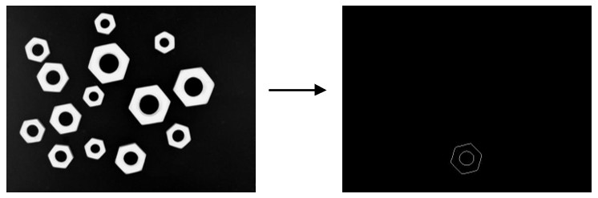

|
类型 |
轮廓 |
|
描述 |
亚像素边缘轮廓提取，使用滞后阈值的canny边缘检测算法提取图像中指定的region区域部分的亚像素边缘轮廓。 边缘轮廓点的梯度大于high阈值的一定是轮廓，小于low的一定不是轮廓，介于low和high之间的且与轮廓边缘点相连接的边缘点也视为轮廓点，提取的轮廓不一定保证是顺时针方向(图像坐标系下)。 如需查看轮廓方向请使用ZV_ContDirection指令 注意：若图像轮廓边缘处噪点或毛边较多可结合图像形态学处理算子如开运算或闭运算将噪点或毛边去除后再提取轮廓 |
|
语法 |
ZV_ContGenSubPix(img,region,contlist,low,high,minLen)
参数： img：ZVOBJECT类型，源灰度图像，单通道8U类型 region：ZVOBJECT类型，表示提取轮廓的有效区域，即region指定的图像部分才提取轮廓，保留逗号不填或填入未使用过的变量则全图提取 contlist：ZVOBJECT类型，列表类型，输出，列表中存储多个轮廓，轮廓属性为曲线型和非多边形型 low：滞后阈值的低阈值，范围(0,255] high：滞后阈值的高阈值，范围(0,255]，大于low minLen：最小轮廓长度，表示提取的轮廓其长度大于等于minContLen |
|
适用控制器 |
支持ZV功能或者5系列以上的控制器 |
|
例子 |
 ZVOBJECT img,re,cont_list ZV_ImgRead(img,"count2.jpg",0) '读取图片 ZV_ReGenRect(re,263,336,114,109) '生成矩形区域 ZV_ContGenSubPix(img,re,cont_list,10,50,30) '从区域中提取亚像素轮廓
' 绘制 ZVOBJECT dst ZV_ImgCopy(img,dst) ZV_ImgSetConst(dst,0) '同尺寸黑色背景图 ZV_DraContList(dst,cont_list,255,0) '绘制轮廓 |